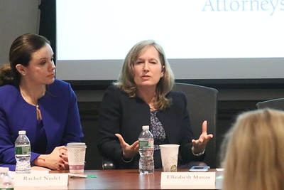

Women Empowerment
Women's empowerment can be defined to promoting women's sense of self-worth, their ability to determine their own choices, and their right to influence social change for themselves and others.
types of empowerment

" Lakes State Park square" by vastateparksstaff is licensed under CC BY 2.0 
 .
.
However, empowerment of women now can be categorized into five main parts social, educational, economic, political and psychological.
The empowerment and autonomy of women and the improvement of their political, social, economic and health status is a highly important end in itself. In addition, it is essential for the achievement of sustainable development. The full participation and partnership of both women and men is required in productive and reproductive life, including shared responsibilities for the care and nurturing of children and maintenance of the household. In all parts of the world, women are facing threats to their lives, health and well- being as a result of being overburdened with work and of their lack of power and influence. In most regions of the world, women receive less formal education than men, and at the same time, women's own knowledge, abilities and coping mechanisms often go unrecognized. The power relations that impede women's attainment of healthy and fulfilling lives operate at many levels of society, from the most personal to the highly public. Achieving change requires policy and programme actions that will improve women's access to secure livelihoods and economic resources, alleviate their extreme responsibilities with regard to housework, remove legal impediments to their participation in public life, and raise social awareness through effective programmes of education and mass communication. In addition, improving the status of women also enhances their decision-making capacity at all levels in all spheres of life, especially in the area of sexuality and reproduction
Countries should act to empower women and should take steps to eliminate inequalities between men and women as soon as possible by:
(a) Establishing mechanisms for women's equal participation and equitable representation at all levels of the political process and public life in each community and society and enabling women to articulate their concerns and needs;
(b) Promoting the fulfilment of women's potential through education, skill development and employment, giving paramount importance to the elimination of poverty, illiteracy and ill health among women;
(c) Eliminating all practices that discriminate against women; assisting women to establish and realize their rights, including those that relate to reproductive and sexual health;
(d) Adopting appropriate measures to improve women's ability to earn income beyond traditional occupations, achieve economic self-reliance, and ensure women's equal access to the labour market and social security systems;
(e) Eliminating violence against women;
(f) Eliminating discriminatory practices by employers against women, such as those based on proof of contraceptive use or pregnancy status;
(g) Making it possible, through laws, regulations and other appropriate measures, for women to combine the roles of child-bearing, breast-feeding and child-rearing with participation in the workforce.